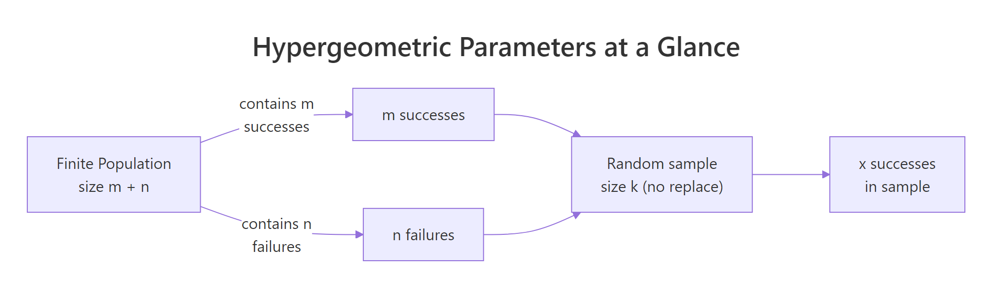
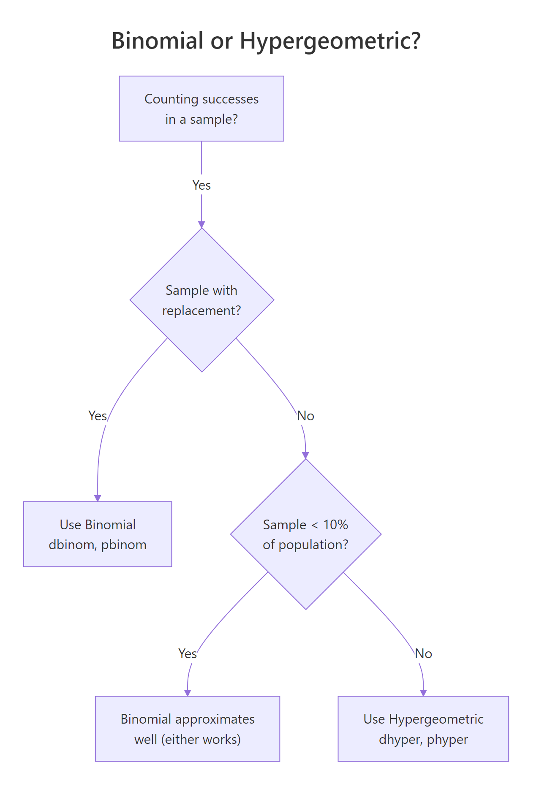

Hypergeometric Distribution in R: Sampling Without Replacement
The hypergeometric distribution gives the probability of drawing a certain number of successes from a finite population when you sample without replacement, think defective chips pulled from a shipment, or aces dealt from a poker deck. R ships four functions for it in base stats: dhyper(), phyper(), qhyper(), and rhyper().
What does the hypergeometric distribution model?
Picture a box of 50 microchips on a QA bench. Exactly 8 are defective and 42 are good. You pull 10 chips at random, no chip goes back in the box, and count the bad ones. The hypergeometric distribution tells you how likely any particular count is. Its key move is that every draw shrinks the remaining pool, so the odds of a defective chip shift as you sample.
Here is the payoff question for that scenario: what is the probability that exactly 2 of the 10 chips you pulled are defective?
There's about a 28.1% chance of finding exactly 2 defective chips. That single call answers the whole QA question in one line, no combinatorics by hand. The arguments map to the problem directly: x is the count of defectives you're asking about, m is the total defectives in the box, n is the total good chips, and k is the sample size.

Figure 1: How m, n, and k map a finite population to a sample.
Try it: From the same box (8 defective, 42 good), you draw a smaller sample of 5 chips. Compute the probability of finding exactly 1 defective chip in that sample.
Click to reveal solution
Explanation: With a smaller sample (k=5), pulling exactly one defective is the most likely single-count outcome, about 40%.
How do you compute exact probabilities with dhyper()?
The single call you just ran is the whole density function. To see the distribution's shape, you evaluate dhyper() across every possible count of defectives and plot the result. The smallest possible count is 0 and the largest is min(m, k), you can't pull more defectives than exist, and you can't pull more than the sample size.
The most likely outcome is 1 defective (33.6%), followed by 2 defectives (28.1%). The distribution is right-skewed and thins out fast, finding 5 or more defectives is below 2% combined. Those probabilities should sum to 1; a quick sum(pmf) confirms it.
0:min(m, k) so the plot stops at the real maximum.Now swap out the QA context for a classic card example. A standard deck has 52 cards with 4 aces. You deal a 5-card poker hand. What is the probability of drawing exactly 3 aces?
About 0.17%, roughly 1 hand in 577. Same function, same four arguments, completely different problem. That reusability is the reason to learn the function rather than memorize formulas per scenario.
Try it: Using the same 52-card deck setup, compute the probability of drawing exactly 2 kings in a 5-card hand.
Click to reveal solution
Explanation: 4 kings and 48 non-kings, same shape as the ace example because each face has the same count.
How do you get cumulative probabilities with phyper()?
Quality control rarely asks "exactly 2 defectives?" The real question is "3 or fewer" or "more than 3." That's what phyper() computes, it sums the PMF up to a cutoff. By default it returns the lower-tail cumulative probability P(X ≤ q); set lower.tail = FALSE to get P(X > q) directly.
In 91.6% of samples you'll see 3 or fewer defectives, leaving an 8.5% chance of finding more than 3. Those two values always sum to 1, they're complementary events.
1 - phyper(q, ...) works, but when the tail is tiny (say 1e-12), subtraction from 1 loses precision and can return 0. The lower.tail = FALSE path evaluates the upper tail directly and keeps all significant digits.Now shift to an auditing scenario. You receive a batch of 200 invoices from a vendor. Your historical data says about 5 invoices (2.5%) contain billing irregularities. You sample 20 invoices for audit. What is the probability of finding at most 1 irregular invoice?
There's a 94.2% chance the audit turns up 0 or 1 irregularity, which means a 5.8% chance of catching 2 or more. If your audit policy says "flag the vendor on 2+ irregularities," that 5.8% is your alarm rate under the status-quo irregular share.
Try it: Using the QA box (m=8 defective, n=42 good, sample k=10), compute the probability of finding at least 1 defective chip. Hint: "at least 1" is the complement of "exactly 0."
Click to reveal solution
Explanation: "At least 1" is 1 minus "exactly 0." Both approaches give the same answer; the phyper(0, ..., lower.tail = FALSE) form is equivalent because P(X > 0) = P(X ≥ 1).
How do you find quantiles and simulate draws with qhyper() and rhyper()?
Two more functions finish the family. qhyper() is the inverse of phyper(), give it a probability, get back the smallest x such that P(X ≤ x) reaches that probability. rhyper() generates random draws from the distribution, letting you simulate thousands of hypothetical samples and check expectations empirically.
First, quantiles. In the QA scenario, what defective counts correspond to the 5th, 50th, and 95th percentiles?
The median sample has 1 defective, only 5% of samples will have 0 defectives or fewer, and 95% have 3 or fewer. That last number is your "one-sided 95% prediction interval", a useful bar for setting QA tolerance rules.
Next, simulation. rhyper(nn, m, n, k) generates nn random hypergeometric samples. Always call set.seed() first for reproducibility, different seeds produce different draws.
The empirical mean is 1.6029, within rounding of the theoretical mean 1.6000. The histogram matches the PMF shape from earlier, that's the convergence you'd expect with 10,000 reps. Simulation is handy when you need to estimate quantities that don't have closed-form expressions, like "the probability that two independent audits both flag the vendor."
set.seed(N) on the line directly above each rhyper() (or any random) call, not in a distant setup block.Try it: Simulate dealing 5 poker hands and report how many aces each hand contained. Use rhyper(5, m = 4, n = 48, k = 5) and set.seed(99).
Click to reveal solution
Explanation: Most 5-card hands have 0 aces; one in this run had 1 ace. Matches the rarity shown by dhyper(3, 4, 48, 5) = 0.17%.
How is hypergeometric different from the binomial distribution?
Binomial and hypergeometric both count successes in a fixed number of trials with two outcomes. The split is whether draws are with replacement. Binomial assumes independent trials with a constant success probability p. Hypergeometric drops the replacement assumption, each draw changes the remaining pool, which shrinks the variance relative to binomial. The shrinkage factor is called the finite population correction.

Figure 2: Decision flow: use binomial or hypergeometric?
Mathematically, for the same success rate p = m/(m+n) and sample size k:
$$\text{Var}_\text{binomial} = k \, p \, (1 - p)$$
$$\text{Var}_\text{hyper} = k \, p \, (1 - p) \, \frac{N - k}{N - 1}$$
Where:
- $N = m + n$ is the total population size
- $p = m / N$ is the success rate in the population
- The factor $(N - k)/(N - 1)$ is the finite population correction, always ≤ 1, so hypergeometric variance is always smaller
Let's see the effect in numbers. Same QA scenario, same "success rate" (8 defective out of 50 = 16%), and same sample size (10). Binomial would treat each draw as independent with p = 0.16.
The binomial gives 27.6%, the hypergeometric gives 28.1%. Close, but not identical, hypergeometric is slightly more concentrated around the mean. The gap widens as the sample fraction k/N grows.
Now make the population large relative to the sample and watch the two distributions converge.
The two probabilities now match to four decimal places. Sampling 10 items from a pool of 10,000 barely dents the pool, so "without replacement" behaves almost identically to "with replacement."
Try it: You have a population of 1,000 people with 100 known responders (p = 10%). You sample 50 people. Compute both the binomial and hypergeometric probabilities of finding exactly 5 responders. They should be very close because the sample is 5% of the population.
Click to reveal solution
Explanation: A 5% sample means the finite population correction barely moves the needle, the two agree to within 0.004.
Practice Exercises
Exercise 1: Build a lot-acceptance rule
You're QA engineer for a shipment of 200 electronics. Quality history says m = 12 items are defective. Your acceptance rule is: sample 20 items, accept the lot if at most 1 defective is found. What is the probability the lot is accepted?
Click to reveal solution
Explanation: phyper(1, 12, 188, 20) sums the PMF for 0 and 1 defective in the sample. About 69.3% of lots with 12 defects out of 200 pass this rule, if you want a stricter gate, lower the acceptance cutoff or increase the sample size.
Exercise 2: Validate dhyper() with rhyper()
Using m = 15, n = 85, k = 20, simulate 100,000 hypergeometric samples with set.seed(1), compute the empirical PMF, then compare to the theoretical PMF from dhyper(). Report the maximum absolute difference across all possible outcomes.
Click to reveal solution
Explanation: With 100,000 samples, the empirical PMF lines up with the theoretical PMF to about 0.002 at the worst-matched outcome. That closeness is a sanity check, if your simulation and the analytic formula disagreed by much more, one of them would be wrong.
Complete Example
Put all four functions to work on a realistic auditing problem.
Setup. A supplier delivers 250 invoices for the quarter. Based on prior audits, 15 invoices (6%) contain irregularities. Your team samples 30 invoices and inspects each for compliance.
Step 1, PMF of irregularities found. How many irregular invoices might the sample turn up?
The most likely outcome is 1 irregular invoice (28.4%), followed by 2 (27.3%).
Step 2, Risk of missing everything. What is the probability of seeing zero irregularities, the "audit missed them all" event?
There's a 13.6% chance the audit finds nothing, even though 15 of 250 invoices are actually irregular. That's a meaningful false-clean rate, big enough to justify either a larger sample or a follow-up review when the first audit comes back clean.
Step 3, 95% upper prediction bound. What's the largest count of irregularities you'd expect 95% of the time?
Ninety-five percent of audits turn up 4 or fewer irregularities; seeing 5 or more would be in the top 5% of samples, worth flagging for escalation.
Step 4, Simulate to cross-check.
Empirical and theoretical line up: mean ≈ 1.8 irregularities per audit, 13.4–13.6% chance of missing them all, 95th percentile at 4. Now you can pitch a clear audit policy to the team: "Expect 1–2 irregularities per random sample of 30; flag any sample returning 5 or more."
n, which ignores the defective items and inflates the probabilities. Always define n = total - m explicitly and sanity-check m + n against your documented population size before trusting the output.Summary
| Function | Role | Typical question |
|---|---|---|
dhyper(x, m, n, k) |
Probability mass | What is the probability of exactly x successes? |
phyper(q, m, n, k) |
Cumulative probability | What is the probability of q or fewer successes? |
qhyper(p, m, n, k) |
Quantile (inverse CDF) | What count corresponds to the pth percentile? |
rhyper(nn, m, n, k) |
Random draws | Simulate hypothetical sample outcomes. |
Key ideas to take away:
- Use the hypergeometric distribution whenever the population is finite and sampling is without replacement, QA lots, audits, card games, lotteries, capture-recapture.
- R parameterizes by m (successes) and n (failures), not total population size N. Translate textbook N → m + n before calling the functions.
- When the sample is under 10% of the population, the binomial distribution is a fine approximation. Above that, use the hypergeometric.
- Always
set.seed()directly above each random call to keep reports reproducible. lower.tail = FALSEgives tail probabilities with full precision, prefer it over1 - phyper()for small tails.
References
- R Core Team, The Hypergeometric Distribution (stats package reference). Link
- Dalgaard, P., Introductory Statistics with R, 2nd Edition. Springer (2008). Chapter 3: Probability and distributions.
- Wasserman, L., All of Statistics. Springer (2004). Chapter 2: Random Variables.
- NIST/SEMATECH, Engineering Statistics Handbook, Hypergeometric Distribution. Link
- Wikipedia, Hypergeometric distribution. Link
- R Core Team, An Introduction to R. Link
Continue Learning
- Binomial vs Poisson in R, the parent post that compares two other count distributions you'll reach for when replacement is allowed.
- Normal Distribution in R, the continuous distribution you'll hit once your sample sizes grow past the point where discrete counts are natural.
- Probability Distributions in R, a tour of R's
d/p/q/rconvention across every built-in distribution.